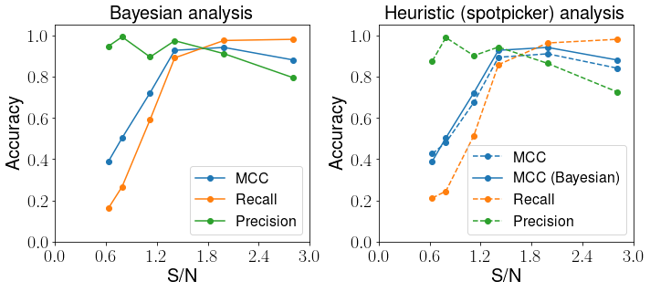
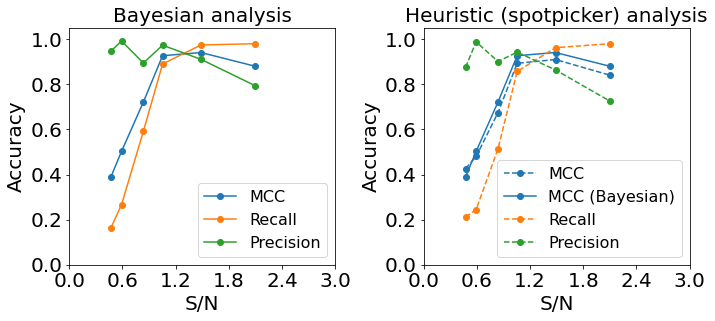

Experimental data¶
[1]:
[ ]:
[1]:
import torch
import pyro
import pyro.distributions as dist
import numpy as np
import pandas as pd
import os
[2]:
from matplotlib import rc
rc('font',**{'family':'sans-serif','sans-serif':['Helvetica']})
## for Palatino and other serif fonts use:
#rc('font',**{'family':'serif','serif':['Palatino']})
rc('text', usetex=True)
import matplotlib.pyplot as plt
[3]:
from sklearn.metrics import matthews_corrcoef, confusion_matrix, \
precision_score, recall_score, \
roc_curve
from scipy.io import loadmat
Orange dye non-attenuated data¶
Tracker v1.1.3flat
[42]:
results = {}
predictions = {}
true_labels = {}
names = ["FL_5555_6684_1p3OD", "FL_4445_5554_1p1OD", "FL_3339_4444_0p8OD",
"FL_2226_3338_0p6OD", "FL_1118_2225_0p3OD", "FL_1_1117_0OD"]
for name in names:
results[name] = pd.read_csv(
"/shared/centaur/data/experimental/nonattenuated/{}/runs/tracker/v1.1.3flat/S1/nocontrol/lr0.005/bs10/params_last.csv"
.format(name),
header=None, squeeze=True, index_col=0)
predictions[name] = np.load(
"/shared/centaur/data/experimental/nonattenuated/{}/runs/tracker/v1.1.3flat/S1/nocontrol/lr0.005/bs10/predictions.npy"
.format(name))
true_labels[name] = np.load("/shared/centaur/data/experimental/nonattenuated/{}/labels.npy".format(name))
[70]:
pd.DataFrame(data=results).T.drop(columns=[float("nan"), "pi_0", "lamda_0", "width_mode_0", "width_size_0"])
[70]:
| iter | -ELBO | gain | pi_1 | lamda_1 | MCC | Recall | Precision | FN | TP | TN | FP | |
|---|---|---|---|---|---|---|---|---|---|---|---|---|
| FL_5555_6684_1p3OD | 29900.0 | 40515940.0 | 6.852407 | 0.038298 | 0.031055 | 0.915697 | 0.905947 | 0.929078 | 68.0 | 655.0 | 33728.0 | 50.0 |
| FL_4445_5554_1p1OD | 29900.0 | 30591322.0 | 6.725662 | 0.101534 | 0.023240 | 0.964020 | 0.967828 | 0.964596 | 48.0 | 1444.0 | 22999.0 | 53.0 |
| FL_3339_4444_0p8OD | 29900.0 | 36886452.0 | 6.634371 | 0.074356 | 0.015539 | 0.895820 | 0.975260 | 0.828540 | 19.0 | 749.0 | 26324.0 | 155.0 |
| FL_2226_3338_0p6OD | 29900.0 | 43654948.0 | 6.926970 | 0.098242 | 0.075726 | 0.961233 | 0.962511 | 0.964690 | 83.0 | 2131.0 | 33921.0 | 78.0 |
| FL_1118_2225_0p3OD | 29900.0 | 45101560.0 | 6.566349 | 0.031429 | 0.038498 | 0.927009 | 0.929752 | 0.927198 | 51.0 | 675.0 | 35441.0 | 53.0 |
| FL_1_1117_0OD | 29900.0 | 49636644.0 | 6.729361 | 0.030443 | 0.090154 | 0.899000 | 0.878672 | 0.923490 | 95.0 | 688.0 | 41842.0 | 57.0 |
Orange dye attenuated data¶
[71]:
snr = [0.63, 0.79, 1.12, 1.41, 1.99, 2.81]
Tracker v1.1.3
[72]:
results = {}
predictions = {}
true_labels = {}
names = ["FL_5555_6684_1p3OD_atten_noHysteresis_0p5_prob", "FL_4445_5554_1p1OD_atten_noHysteresis_0p5_prob",
"FL_3339_4444_0p8OD_atten_noHysteresis_0p5_prob", "FL_2226_3338_0p6OD_atten_noHysteresis_0p5_prob",
"FL_1118_2225_0p3OD_atten_noHysteresis_0p5_prob", "FL_1_1117_0OD_atten_noHysteresis_0p5_prob"]
for name in names:
results[name] = pd.read_csv(
"/shared/centaur/data/experimental/attenuated/{}/runs/tracker/v1.1.3flat/S1/nocontrol/lr0.005/bs10/params_last.csv"
.format(name),
header=None, squeeze=True, index_col=0)
predictions[name] = np.load(
"/shared/centaur/data/experimental/attenuated/{}/runs/tracker/v1.1.3flat/S1/nocontrol/lr0.005/bs10/predictions.npy"
.format(name))
true_labels[name] = np.load("/shared/centaur/data/experimental/attenuated/{}/labels.npy".format(name))
[73]:
scores_v1p13 = pd.DataFrame(data=results).T.drop(columns=[float("nan"), "pi_0", "lamda_0", "width_mode_0", "width_size_0"])
scores_v1p13
[73]:
| iter | -ELBO | gain | pi_1 | lamda_1 | MCC | Recall | Precision | FN | TP | TN | FP | |
|---|---|---|---|---|---|---|---|---|---|---|---|---|
| FL_5555_6684_1p3OD_atten_noHysteresis_0p5_prob | 29900.0 | 27305760.0 | 1.769059 | 0.003534 | 0.026631 | 0.389858 | 0.163389 | 0.947368 | 553.0 | 108.0 | 33744.0 | 6.0 |
| FL_4445_5554_1p1OD_atten_noHysteresis_0p5_prob | 29900.0 | 20433688.0 | 2.877008 | 0.014074 | 0.027418 | 0.502883 | 0.266805 | 0.992268 | 1058.0 | 385.0 | 23013.0 | 3.0 |
| FL_3339_4444_0p8OD_atten_noHysteresis_0p5_prob | 29900.0 | 25251286.0 | 5.252812 | 0.023329 | 0.002412 | 0.721728 | 0.591700 | 0.894737 | 305.0 | 442.0 | 26305.0 | 52.0 |
| FL_2226_3338_0p6OD_atten_noHysteresis_0p5_prob | 29900.0 | 31451082.0 | 6.725665 | 0.073904 | 0.008817 | 0.927197 | 0.890618 | 0.973711 | 232.0 | 1889.0 | 33878.0 | 51.0 |
| FL_1118_2225_0p3OD_atten_noHysteresis_0p5_prob | 29900.0 | 36758332.0 | 6.801042 | 0.042468 | 0.017617 | 0.941185 | 0.974702 | 0.910987 | 17.0 | 655.0 | 35391.0 | 64.0 |
| FL_1_1117_0OD_atten_noHysteresis_0p5_prob | 29900.0 | 44042968.0 | 6.901953 | 0.040881 | 0.093299 | 0.880256 | 0.980422 | 0.793902 | 13.0 | 651.0 | 41700.0 | 169.0 |
[74]:
scores_sp = pd.DataFrame(data={"spMCC": [matthews_corrcoef(true_labels[name]["z"][true_labels[name]["z"]<2], true_labels[name]["spotpicker"][true_labels[name]["z"]<2]) for name in names],
"spRecall": [recall_score(true_labels[name]["z"][true_labels[name]["z"]<2], true_labels[name]["spotpicker"][true_labels[name]["z"]<2]) for name in names],
"spPrecision": [precision_score(true_labels[name]["z"][true_labels[name]["z"]<2], true_labels[name]["spotpicker"][true_labels[name]["z"]<2]) for name in names],
},
index=names)
scores_sp
[74]:
| spMCC | spRecall | spPrecision | |
|---|---|---|---|
| FL_5555_6684_1p3OD_atten_noHysteresis_0p5_prob | 0.426138 | 0.211800 | 0.875000 |
| FL_4445_5554_1p1OD_atten_noHysteresis_0p5_prob | 0.480272 | 0.244629 | 0.988796 |
| FL_3339_4444_0p8OD_atten_noHysteresis_0p5_prob | 0.674511 | 0.514056 | 0.901408 |
| FL_2226_3338_0p6OD_atten_noHysteresis_0p5_prob | 0.893359 | 0.857614 | 0.942976 |
| FL_1118_2225_0p3OD_atten_noHysteresis_0p5_prob | 0.910230 | 0.962798 | 0.863818 |
| FL_1_1117_0OD_atten_noHysteresis_0p5_prob | 0.840818 | 0.980422 | 0.725753 |
[75]:
plt.figure(figsize=(10,8))
plt.subplot(221)
plt.plot(snr, scores_v1p13["MCC"], "o-", label="MCC")
plt.plot(snr, scores_v1p13["Recall"], "o-", label="Recall")
plt.plot(snr, scores_v1p13["Precision"], "o-", label="Precision")
plt.ylim(0,1.05)
plt.xlim(0,1)
plt.xlabel(r"S/N", fontsize=20)
plt.ylabel(r"Accuracy", fontsize=20)
plt.title(r"Bayesian analysis", fontsize=20)
plt.gca().axes.get_xaxis().set_ticks(np.arange(6)*0.6)
plt.gca().axes.get_yaxis().set_ticks(np.arange(6)*0.2)
plt.xticks(size=20)
plt.yticks(size=20)
plt.legend(fontsize=16)
plt.subplot(222)
plt.plot(snr, scores_sp["spMCC"], "o--", label="MCC")
plt.plot(snr, scores_v1p13["MCC"], "o-", color="C0", label="MCC (Bayesian)")
plt.plot(snr, scores_sp["spRecall"], "o--", label="Recall")
plt.plot(snr, scores_sp["spPrecision"], "o--", label="Precision")
plt.ylim(0,1.05)
plt.xlim(0,1)
plt.xlabel(r"S/N", fontsize=20)
plt.ylabel(r"Accuracy", fontsize=20)
plt.title(r"Heuristic (spotpicker) analysis", fontsize=20)
plt.gca().axes.get_xaxis().set_ticks(np.arange(6)*0.6)
plt.gca().axes.get_yaxis().set_ticks(np.arange(6)*0.2)
plt.xticks(size=20)
plt.yticks(size=20)
plt.legend(fontsize=16)
plt.tight_layout()
plt.show()

[76]:
plt.figure(figsize=(15,15))
for i, name in enumerate(names):
plt.subplot(4, 4, i+1)
plt.hist(predictions[name]["z_prob"].ravel(), bins=50, density=True, alpha=0.7)
plt.xlim(-0.03, 1.03)
#plt.ylim(0, 10)
plt.yscale('log', nonpositive='clip')
#plt.gca().axes.get_xaxis().set_ticks([0.8, 0.9, 1])
#plt.gca().axes.get_yaxis().set_ticks(np.arange(6)*0.2)
plt.xticks(size=20)
plt.yticks(size=20)
plt.xlabel(r"p($z$)", fontsize=20)
plt.ylabel(r"density", fontsize=20)
plt.title(r"S/N = {}".format(snr[i]), fontsize=20)
plt.tight_layout()
plt.show()

[ ]: